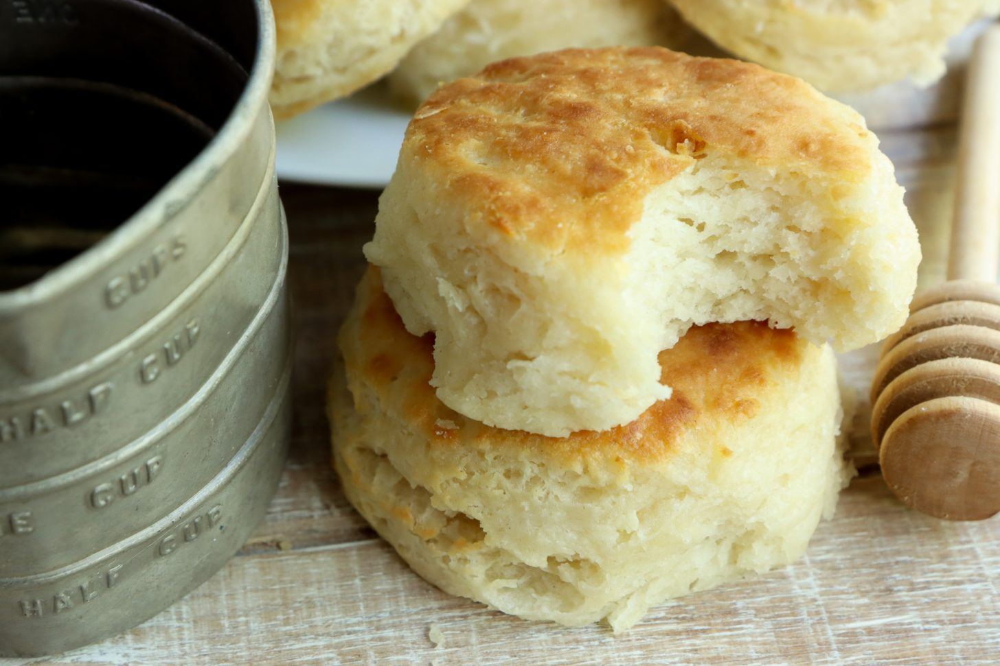

Biscuits

I hope you like biscuits
This recipe will help you to make fluffy biscuits! This dish goes great with almost any southern style breakfast, but it especially compliments sausage gravy.
Ingredients
- 2 cups self-rising flour
- 1 stick butter
- 1 cup buttermilk
Steps
- Measure the flour
- Add the butter
- Cut in the butter
- add buttermilk
- knead and fold
- cut out the biscuits
- Bake at 450F for 12-14 minutes
- Brush with melted butter as you remove them from the oven.
- Wait until butter is absorbed and brush once more